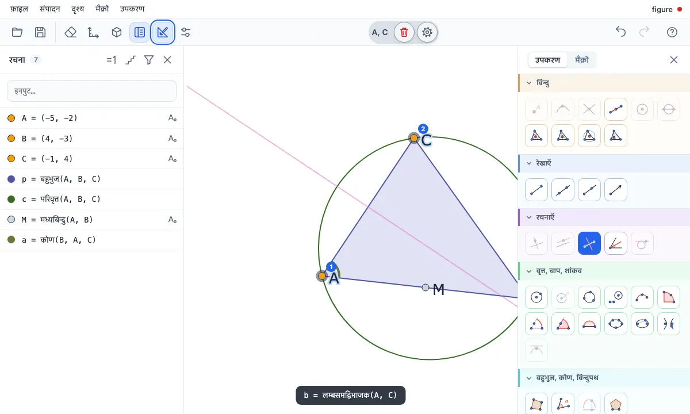
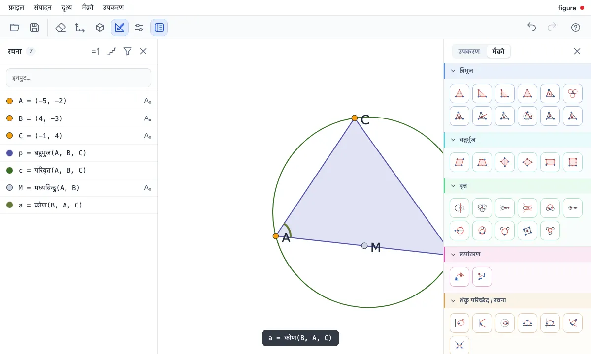
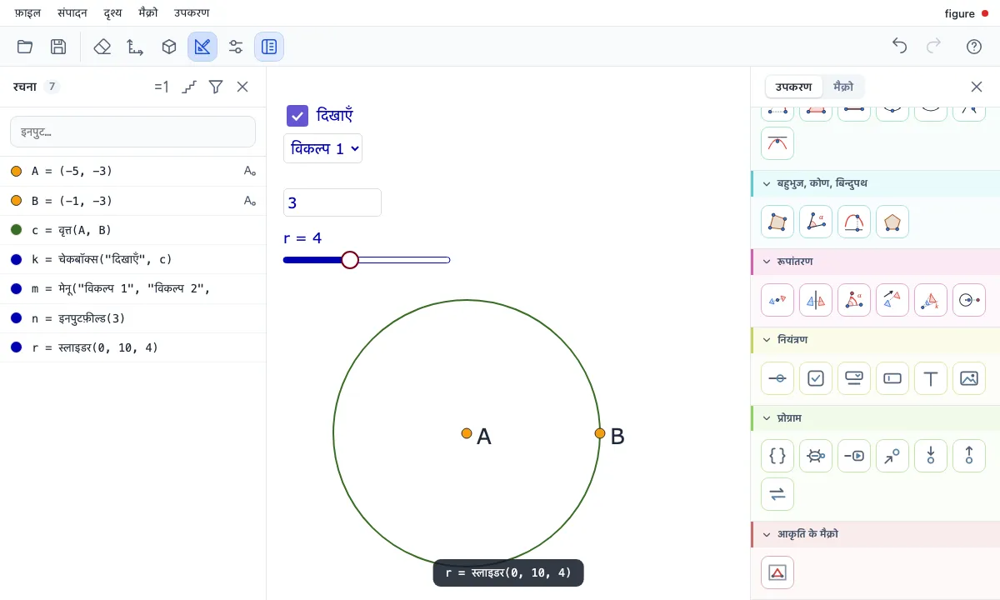

टूल पैलेट

पैलेट खोलना
- बार का , या दृश्य › टूल पैलेट, दाईं ओर सभी टूल एक साथ खोलता है, वलय के रंगों में परिवारों के अनुसार, और अंत में आकृति के मैक्रो।
- पैनल के ऊपर दो टैब: उपकरण और मैक्रो (DocTools के बाहर)। DocGeo चुने हुए टैब को याद रखता है।
- मैक्रो टैब मेरे मैक्रो और फिर लाइब्रेरी दिखाता है, हर फ़ोल्डर का एक क्षेत्र, हर खंड अपने रंग में। टूल की तरह, मैक्रो वहाँ धुंधले दिखते हैं और संकेत में समझाए जाते हैं। चुना गया मैक्रो आकृति में कॉपी होकर उपकरण टैब के आकृति के मैक्रो क्षेत्र में आ जाता है।
- पहली बार शुरू करने पर पैलेट दिखाई देता है। इसके बाद यह ब्राउज़र अगली बार शुरू करने के लिए याद रखता है कि पैलेट खुला है या बंद।
- यह गुण पैनल की जगह खुलता है: एक को खोलने से दूसरा बंद हो जाता है, हाथ में लिया टूल छूटे बिना।
- किसी ऑब्जेक्ट पर दायाँ क्लिक पैलेट की जगह उसके गुण खोलता है; उन्हें बंद करने पर पैलेट लौट आता है।
- किसी परिवार के शीर्षक पर क्लिक करने से वह सिमटता या खुलता है; DocGeo इसे याद रखता है।
- Esc टूल या चयन छोड़ता है, फिर पैलेट बंद करता है।
- छोटी स्क्रीन पर पैलेट आकृति को ढक लेता है और टूल चुनते ही बंद हो जाता है। 500 px से कम चौड़ाई पर उसका बटन बार से हटकर इनपुट पंक्ति के दाईं ओर आ जाता है।

टूल से रचना
- किसी टूल पर क्लिक करने से वह हाथ में आ जाता है; दबा होने पर फिर से क्लिक करने से वह छूट जाता है।
- पैलेट में वलय के सभी टूल और कुछ और भी हैं (नीचे वलय चिह्न)। समतल और ठोस परिवार तथा 3D चिह्नित टूल केवल 3D दृश्य में दिखते हैं।
- नियंत्रण परिवार, जो वलय में नहीं है, स्लाइडर, चेकबॉक्स, मेनू, इनपुट फ़ील्ड, पाठ और चित्र रखता है।
- प्रोग्राम परिवार, जो वलय में नहीं है, कछुए, बटन और घटना प्रोग्राम बनाता है (देखें ब्लॉक और कछुआ)।
- पैलेट खुला होने पर, किसी ऑब्जेक्ट पर क्लिक उसे बिना वलय खोले चुनता है, और खाली जगह पर क्लिक चयन हटाता है। जो टूल उस ऑब्जेक्ट या बहु-चयन को स्वीकार नहीं करते, वे धुंधले दिखते हैं।
- पैलेट खुला हो और कोई टूल न चुना हो, तो आकृति केवल हिलाई जाती है: खाली जगह या कटान पर क्लिक कोई बिन्दु नहीं बनाता। बिन्दु बनाने के लिए बिन्दु टूल लें, जो पैलेट का पहला टूल है।
- किसी टूल पर पॉइंटर ले जाने पर संकेत उसकी पंक्ति दिखाता है। यदि चुने हुए ऑब्जेक्ट उसके लिए पर्याप्त हों, तो वह जो ऑब्जेक्ट बनाएगा वह हल्का दिखता है।
- पहला चुना गया ऑब्जेक्ट कोई भी ऐसा स्थान लेता है जिसे उसका प्रकार स्वीकार करे: लंब के लिए रेखा बिन्दु से पहले आ सकती है।
- आर्गुमेंट «रचना» पैनल में भी चुने जा सकते हैं: जिन ऑब्जेक्ट को टूल स्वीकार करता है उनकी पंक्तियाँ हरे रंग में उभरी दिखती हैं, बाकी फीकी। वहाँ छिपा हुआ ऑब्जेक्ट भी चुना जा सकता है। वहाँ बिन्दु तभी चुना जा सकता है जब वह पहले से मौजूद हो, और दो ऑब्जेक्ट अपने सभी प्रतिच्छेद बिन्दु देते हैं। जब तक टूल सक्रिय है, किसी पंक्ति पर क्लिक उसे नहीं बदलता। पहले से चुनी गई पंक्ति नीली हो जाती है, कमांड में अपने स्थान (1, 2…) के साथ।
- टूल स्थायी है: हर ऑब्जेक्ट के बाद वह फिर से अपने पहले आर्गुमेंट की प्रतीक्षा करता है। उसका बटन दबा रहता है और बार में हो गया वाली पट्टी दिखती है।
- Shift के साथ चुना गया आर्गुमेंट रखा जाता है: टूल हर ऑब्जेक्ट के बाद उसे फिर से लेता है, जब तक आप टूल नहीं छोड़ते। किसी सममिति के अक्ष पर Shift-क्लिक करें, फिर रूपांतरित की जाने वाली हर वस्तु पर क्लिक करें; संकेंद्रीय वृत्तों के केन्द्र के लिए भी ऐसा ही। निर्देश का d रखें बटन भी यही करता है (उदाहरण के लिए उँगली से); d बदलें उसे फिर से माँगता है। वलय के टूल पर और चयन के साथ चुने गए टूल पर यह लागू नहीं होता।
- बाहर निकलना: हो गया, Esc, संकेत का ✕, टूल पर फिर से क्लिक, रबड़, चरण-दर-चरण, या इनपुट पंक्ति में क्लिक। पूर्ववत करना, फिर से करना, गुण और 3D दृश्य टूल को बनाए रखते हैं।
चयन के साथ
पहले चुने गए ऑब्जेक्ट चुने गए टूल के आर्गुमेंट बन जाते हैं, जो तब केवल एक बार रचना करता है: देखें बहु-चयन से रचना।
किसी वस्तु का रूपांतरण
- रूपांतरण पहले वह लेता है जो उसे परिभाषित करता है (केन्द्र, अक्ष, सदिश, वृत्त), फिर रूपांतरित किया जाने वाला बिन्दु या वस्तु: रेखाखण्ड, रेखा, किरण, सदिश, बहुभुज, वृत्त, चाप, शांकव, फलन का वक्र, बिन्दुपथ; 3D में समतल, गोला और बहुफलक भी (व्युत्क्रमण को छोड़कर)।
- पॉइंटर के नीचे पहले बिन्दु, फिर वस्तु ली जाती है; खाली जगह में बिन्दु बनता है। ऊपर से गुज़रने पर प्रतिबिम्ब हल्का दिखता है।
- प्रतिबिम्ब वस्तु के ही प्रकार का होता है: बहुभुज का बहुभुज, वृत्त का वृत्त… फलन के वक्र, बिन्दुपथ या शांकव के चाप का प्रतिबिम्ब बिन्दुपथ होता है।
- व्युत्क्रमण में रेखा या वृत्त का प्रतिबिम्ब वृत्त होता है, या रेखा, यदि वह केन्द्र से होकर जाए; बहुभुज का प्रतिबिम्ब वक्र भुजाओं वाला बहुभुज।
- प्रतिबिम्ब अपनी वस्तु का रंग, भराव, आकार, अपारदर्शिता और डैश लेता है। उसे खींचा नहीं जा सकता, पर उस पर बिन्दु रखा जा सकता है।
- कई वस्तुओं के रूपांतरण के लिए केन्द्र या अक्ष को Shift के साथ चुनें (रखा गया आर्गुमेंट)।
सभी टूल
हर टूल के लिए: क्या चुनना है, फिर लिखी जाने वाली पंक्ति।
बिन्दु
-
बिन्दुवह बिन्दु जिसे आप छूते हैं: खाली जगह पर मुक्त, किसी ऑब्जेक्ट पर, या दो ऑब्जेक्टों के प्रतिच्छेद पर।
A = (x, y) -
ऑब्जेक्ट पर बिन्दुवलयएक ऑब्जेक्ट: उस ऑब्जेक्ट पर बिन्दु, जहाँ आप उसे छूते हैं। खाली जगह पर क्लिक कुछ नहीं करता।
बिन्दु(c, t) -
प्रतिच्छेदवलयएक ही स्पर्श से कोई कटान-बिन्दु: वही बिन्दु; या दोनों ऑब्जेक्ट एक के बाद एक: उनके सभी प्रतिच्छेद बिन्दु, GeoGebra की तरह (एक रेखा और एक वृत्त के दो, भले ही वे अभी न कटते हों)। वक्र और बिन्दुपथ भी।
प्रतिच्छेद(a, b) -
मध्यबिन्दुवलयदो बिन्दु, या एक रेखाखण्ड।
मध्यबिन्दु(A, B) -
केन्द्रवलयएक वृत्त: उसका केन्द्र।
केन्द्र(c) -
अन्यप्रतिच्छेददो ऑब्जेक्ट, फिर उनके किसी प्रतिच्छेद पर पहले से रखा बिन्दु: उससे सबसे दूर वाला प्रतिच्छेद बिन्दु।
अन्यप्रतिच्छेद(a, b, P) -
अंतःकेंद्रतीन बिन्दु, किसी त्रिभुज के शीर्ष: उसके अंतर्वृत्त का केन्द्र।
अंतःकेंद्र(A, B, C) -
केन्द्रकतीन बिन्दु: त्रिभुज का केन्द्रक।
केन्द्रक(A, B, C) -
परिकेंद्रतीन बिन्दु: परिवृत्त का केन्द्र।
परिकेंद्र(A, B, C) -
लंबकेंद्रतीन बिन्दु: त्रिभुज का लंबकेंद्र।
लंबकेंद्र(A, B, C)
रेखाएँ
-
रेखाखण्डवलयदो बिन्दु, उसके अंत्य बिन्दु।
रेखाखण्ड(A, B) -
रेखावलयरेखा के दो बिन्दु।
रेखा(A, B) -
किरणवलयदो बिन्दु: आरंभ-बिन्दु, फिर किरण का एक बिन्दु।
किरण(A, B) -
सदिशवलयदो बिन्दु: आरंभ-बिन्दु, फिर अंत-बिन्दु।
सदिश(A, B)
रचनाएँ
-
लंबरेखावलयएक बिन्दु और एक रेखा, किसी भी क्रम में। 3D में, एक रेखा या एक समतल।
लंबरेखा(P, d) -
समानांतररेखावलयएक बिन्दु और एक रेखा, किसी भी क्रम में।
समानांतररेखा(P, d) -
लम्बसमद्विभाजकवलयदो बिन्दु, या एक रेखाखण्ड।
लम्बसमद्विभाजक(A, B) -
कोणसमद्विभाजकवलयतीन बिन्दु: पहली भुजा का एक बिन्दु, शीर्ष, दूसरी भुजा का एक बिन्दु।
कोणसमद्विभाजक(A, O, B) -
स्पर्शरेखाएक बिन्दु, फिर एक वृत्त, शांकव या किसी फलन का ग्राफ़। टूल स्पर्शरेखा क्रमांक 1 देता है; दूसरी के लिए उसकी पंक्ति में यह संख्या 2 कर दें।
स्पर्शरेखा(P, c, 1)
वृत्त, चाप, शांकव
-
वृत्त (केन्द्र और बिन्दु)वलयकेन्द्र, फिर वृत्त का एक बिन्दु।
वृत्त(O, A) -
वृत्त (केन्द्र और त्रिज्या)वलयकेवल केन्द्र: वलय में आइकन दबाए रखें, माउस या उँगली हिलाएँ और त्रिज्या तय करने के लिए छोड़ दें। मेनू या पैलेट से आरम्भिक त्रिज्या लगभग 150 पिक्सेल होती है। बाद में वृत्त को खींचकर या उसकी पंक्ति में इसे बदलें।
-
परिवृत्तवलयवृत्त के तीन बिन्दु।
परिवृत्त(A, B, C) -
परकारत्रिज्या देने वाले दो बिन्दु, फिर केन्द्र।
परकार(A, B, O) -
वृत्त (केन्द्र, दिशा और त्रिज्या)3Dकेन्द्र, फिर एक रेखा (अक्ष) या एक समतल (वृत्त के समानांतर), फ़र्श सहित। त्रिज्या लगभग 150 पिक्सेल।
वृत्त(O, 3.8, d) -
वृत्त (अक्ष और बिन्दु)3Dएक रेखा, यानी अक्ष, फिर वृत्त का एक बिन्दु।
वृत्त(d, P) -
चापतीन बिन्दु: आरंभ, बीच से गुज़रने वाला एक बिन्दु, अंत (3D में, उनके समतल में)। या एक वृत्त या दीर्घवृत्त, फिर आरंभ और अंत (वामावर्त)।
चाप(A, B, C),चाप(c, P, Q) -
त्रिज्यखण्डचाप की तरह, तीन बिन्दु, या एक वृत्त या दीर्घवृत्त और दो बिन्दु: उससे घिरा त्रिज्यखण्ड।
त्रिज्यखण्ड(A, B, C),त्रिज्यखण्ड(c, P, Q) -
केंद्रचापकेन्द्र, आरंभ, फिर उस किरण का एक बिन्दु जहाँ चाप रुकता है (वामावर्त)। 3D में, कोण AMB का चाप, उसके समतल में।
केंद्रचाप(M, A, B) -
केंद्रत्रिज्यखण्ड
केंद्रचापकी तरह: त्रिज्यखण्ड।केंद्रत्रिज्यखण्ड(M, A, B) -
अर्धवृत्तदो बिन्दु, व्यास के सिरे: [AB] के बाईं ओर का अर्धवृत्त।
अर्धवृत्त(A, B) -
शांकवशांकव के पाँच बिन्दु। दूसरे बिन्दु से ही, पूर्वावलोकन वृत्त के सबसे निकट वाला शांकव दिखाता है।
शांकव(A, B, C, D, E) -
दीर्घवृत्तदोनों नाभियाँ, फिर दीर्घवृत्त का एक बिन्दु।
दीर्घवृत्त(F, G, P) -
अतिपरवलयदोनों नाभियाँ, फिर अतिपरवलय का एक बिन्दु।
अतिपरवलय(F, G, P) -
परवलयनाभि, फिर नियता।
परवलय(F, d)
बहुभुज, कोण, बिन्दुपथ
-
बहुभुजवलयशीर्ष एक-एक करके, फिर बंद करने के लिए पहला शीर्ष दोबारा।
बहुभुज(A, B, C) -
कोणवलयतीन बिन्दु: पहली भुजा का एक बिन्दु, शीर्ष, दूसरी भुजा का एक बिन्दु।
कोण(A, O, B) -
बिन्दुपथवलयऐसा बिन्दु या ऐसी रेखा जो ऑब्जेक्ट पर किसी बिन्दु पर निर्भर है: बिन्दु का बिन्दुपथ जब वह ऑब्जेक्ट पर बिन्दु अपने ऑब्जेक्ट पर चलता है; रेखा के लिए उसका अन्वालोप, यानी उसकी स्थितियों को स्पर्श करने वाला वक्र।
बिन्दुपथ(M, P),बिन्दुपथ(d, P) -
समबहुभुजदो क्रमागत शीर्ष: टूल एक वर्ग देता है; उसकी पंक्ति में भुजाओं की संख्या बदलें।
समबहुभुज(A, B, 4)
रूपांतरण
-
केन्द्रीय सममितिवलयकेन्द्र, फिर रूपांतरित किया जाने वाला बिन्दु या वस्तु।
परावर्तन(O, P) -
अक्षीय सममितिवलयअक्ष, फिर रूपांतरित किया जाने वाला बिन्दु या वस्तु।
परावर्तन(d, P) -
घूर्णनकेन्द्र, फिर बिन्दु या वस्तु: चौथाई चक्कर, जिसे उसकी पंक्ति में बदला जा सकता है।
घूर्णन(O, P, 90) -
स्थानांतरणसदिश, फिर बिन्दु या वस्तु।
स्थानांतरण(u, P) -
आवर्धनकेन्द्र, फिर बिन्दु या वस्तु: अनुपात 2, जिसे उसकी पंक्ति में बदला जा सकता है।
आवर्धन(O, P, 2) -
व्युत्क्रमणव्युत्क्रमण वृत्त, फिर बिन्दु या वस्तु।
व्युत्क्रमण(c, P)
समतल
-
समतल3Dतीन बिन्दु, या एक बिन्दु और एक रेखा।
समतल(A, B, C) -
समांतरसमतल3Dएक बिन्दु और एक समतल (फ़र्श सहित): बिन्दु से होकर समानांतर समतल।
समांतरसमतल(A, p) -
लंबसमतल3Dएक बिन्दु और एक रेखा: रेखा पर लंब समतल।
लंबसमतल(A, d)
ठोस
-
गोलावलय3Dकेन्द्र, फिर गोले का एक बिन्दु।किसी बिन्दु के उपकरण वलय में यह उपकरण वृत्तों के पास होता है।
गोला(O, A) -
बेलन3Dदो बिन्दु, अक्ष के सिरे। त्रिज्या लगभग 150 पिक्सेल।
बेलन(A, B, 3.8) -
शंकु3Dआधार का केन्द्र, फिर शीर्ष। त्रिज्या लगभग 150 पिक्सेल।
शंकु(A, B, 3.8) -
घन3Dएक ही समतल के या एक ही ऊँचाई के दो बिन्दु, अन्यथा तीन बिन्दु (देखें 3D)।
घन(A, B, C) -
प्रिज़्म3Dएक बहुभुज, यानी आधार, फिर एक बिन्दु, सामने वाले फलक का शीर्ष।
प्रिज़्म(p, P) -
पिरामिड3Dएक बहुभुज, यानी आधार, फिर शीर्ष।
पिरामिड(p, S) -
अनुप्रस्थकाट3Dएक ठोस (गोला, बेलन, शंकु, बहुफलक) और एक समतल, किसी भी क्रम में।
अनुप्रस्थकाट(s, p) -
जाल3Dघन, प्रिज़्म या पिरामिड: उसका समतल जाल।
जाल(c, 1)
नियंत्रण

-
स्लाइडरस्लाइडर का स्थान, −5 से 5 तक, 0.1 के चरण में।
स्लाइडर(-5, 5, 1) -
चेकबॉक्सजो वस्तुएँ यह दिखाता है, यदि हों (दोबारा क्लिक एक को हटाता है), फिर एक खाली स्थान: चेकबॉक्स, चिह्नित।
चेकबॉक्स("दिखाएँ", a, c) -
मेनूमेनू का स्थान, तीन विकल्पों के साथ जिन्हें उसकी पंक्ति में फिर से लिखा जाता है। उसका मान विकल्प की संख्या है।
मेनू("चुनें", "विकल्प 1", "विकल्प 2", "विकल्प 3") -
इनपुटफ़ील्डफ़ील्ड का स्थान। इसमें एक संख्या होती है, जिसे सूत्र उसके नाम से पढ़ते हैं।
इनपुटफ़ील्ड("मान", 1) -
पाठपाठ का स्थान, जिसे उसकी परिभाषा में फिर से लिखा जाता है।
"पाठ" -
चित्रएक बिंदु या खाली स्थान, फिर फ़ाइल: इस बिंदु और इसके दाईं ओर बने दूसरे बिंदु के बीच चित्र। 3D में, एक तीसरा बिंदु, उसका ऊपरी बायाँ कोना, उसे क्षैतिज रखता है, और वह आकृति के साथ घूमता है।
चित्र(A, B)
रखा गया नियंत्रण अपने गुण खोलता है; उन्हें बंद करने पर पैलेट लौट आता है। दायाँ बटन उसे चलाए बिना खिसकाता है; उँगली से, गुण खुले होने पर दबाकर खींचने से वह खिसकता है। चेकबॉक्स, मेनू या फ़ील्ड का शीर्षक खींचने से भी वह खिसकता है। चित्र के बिंदु उसका आकार तय करते हैं और उसे रचना से जोड़ते हैं; यदि वे मुक्त हों तो चित्र को खींचने से वे साथ खिसकते हैं। नियंत्रण 10 पिक्सेल के चरणों में रखा जाता है, जिससे संरेखण आसान होता है; अपने बिंदुओं से जुड़ा चित्र इसका अपवाद है।
चेकबॉक्स या मेनू वस्तुओं की प्रदर्शन शर्त के माध्यम से काम करता है: देखें दृश्य यदि.
प्रोग्राम
-
नया प्रोग्रामगुणों में एक खाली प्रोग्राम खोलता है।
-
कछुआएक बिंदु, या कोई खाली जगह जो एक बिंदु बनाती है: उस बिंदु से चलने वाला कछुआ, ब्लॉकों में खुला।
TURTLE_INIT("A", A) -
बटनउसके तीर की जगह: बटन, उसका प्रोग्राम ब्लॉकों में खुला।
बटन("चलाएँ") -
जब वस्तु खींची जाएएक खिसकाया जा सकने वाला बिंदु: उसे खींचने पर चलने वाला प्रोग्राम, ब्लॉकों में खुला।
-
जब वस्तु दबाई जाएएक खिसकाया जा सकने वाला बिंदु: उसे दबाने पर चलने वाला प्रोग्राम, ब्लॉकों में खुला।
-
जब वस्तु छोड़ी जाएएक खिसकाया जा सकने वाला बिंदु: उसे छोड़ने पर चलने वाला प्रोग्राम, ब्लॉकों में खुला।
-
जब मान बदलेएक व्यंजक: उसका मान बदलने पर चलने वाला प्रोग्राम, ब्लॉकों में खुला।
आकृति के मैक्रो
-
नया मैक्रोचुनी हुई वस्तुएँ पहली प्रारंभिक वस्तुओं के रूप में: मैक्रो की परिभाषा; आकृति के मैक्रो इसके बाद आते हैं (देखें मैक्रो)।
रूपांतरण किसी बिन्दु या वस्तु का प्रतिबिम्ब बनाते हैं (देखें
किसी वस्तु का रूपांतरण)।
केवल कीबोर्ड से: स्थिरबिन्दु, शीर्ष,
स्लाइडर, सूची, त्रिविम प्रतिच्छेद,
दीर्घवृत्त(F, G, a) और
अतिपरवलय(F, G, a) (देखें
कमांड)।